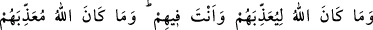
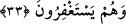

tatmıştır. Rasûlûllah (s.a.v.), Bedir günü Kureyş’ten esir edilenlerden üç kişiyi
öldürtmüştür. Bunlar Tuayme b. Adiy, Utbe b. Ebû Muayt ve Nadr b. Hâris’tir. Nadr’ı,
Mikdâd b. Esved esir almıştı.
Nadr’ın son derece sapık ve câhil olması yüzünden şu söylediğine bir bakın. Bu
sözlerinin yerine şöyle dememiştir: “Allah’ım, eğer bu senin katından gelmiş bir
gerçekse bizi ona ulaştır, ondan bizi faydalandır, onu kalblerimizin şifası,
göğüslerimizin nuru kıl.” Hali bu olan kimsenin sözü, nasıl Kur’an gibi olur?
33. Halbuki sen onların içinde iken Allah onlara azab edecek değildi. Ve onlar
istiğfar ederlerken de Allah onlara azab edecek değildir.
“Halbuki sen onların içinde iken Allah onlara azab” etmeyi murâd “edecek
değildi.” Çünkü azab geldiğinde herkesi kaplar. Hiçbir ümmete içlerinden
peygamberleri ve müminler çıkarılmadan azab edilmemiştir. Âyette Nebî (a.s)’ı tazim
ve hürmetini muhafaza vardır. Allah onu âlemlere rahmet olarak göndermiştir. Rahmet
ile azab birbirine zıttır. İki zıt ise bir arada bulunmaz.
Rasûl (a.s.)’ın yaşadığı ve sünneti yaşandığı müddetçe en büyük eman/te’minat olduğu
söylenmiştir. Âyet onun Allah katındaki şeref ve kıymetine delildir. Çünkü onu
kullarının güvende olmasına ve azabın inmemesine sebeb kılmıştır. Burada salâh ve
takvâ sahibi kimselere yakın olan toplumlardan Allah Teâlâ’nın azabı kaldıracağına da
işaret vardır.
Şeyh Üftâde Efendi (k.s) der ki: Kâinattaki bütün intizam Rasûlullah (s.a.v.)’in
şerefli vücûdu iledir. O, Hakk’ın zâtının mazharı ve âlemlerin tılsımıdır. Hatta İsâ (a.s.)
cesediyle birlikte göğe yükseldiği halde O’nun temiz cisminin dünyada kalmasının
cesedler âleminin ıslah ve intizamı için olduğu söylenmiştir.
Şeyh Attâr (k.s.) der ki:
Kendisini arasâtın efendisi olarak isimlendirdi
Ben hediye edilmiş bir rahmet olarak gönderildim dedi
“Ve onlar istiğfar ederlerken de Allah onlara azab edecek değildir.” Burada
kastedilen, hicrete güç yetiremeyip müşrikler arasında kalan çaresiz müminlerin
istiğfârıdır. Âyetin mânâsının “onların sulblerinde istiğfar edecek kimseler bulunduğu
müddetçe” veya “onların arasında küfrü bırakıp günahından istiğfar edecek kimseler